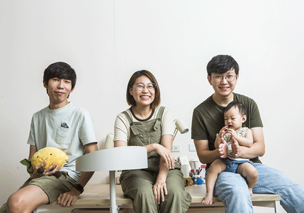

超級推薦的podcast!
好味小姐從寵物電商起家，為了宣傳理念投入YouTube，靠療癒人心的寵物家庭日常吸引大票粉絲，去年7月投入Podcast，每集不重複收聽人數達20萬

很久以前就開始追好味小姐了!想當初只有主頻道的他們到現在開了超多副頻道的他們，真的是越來越愛耶!!!
一開始就是看好味小姐煮貓飯，切菜聲配合著優雅的背景音樂，還有可愛貓咪們的加持，一整個愛爆!
後面出現的腦波弱，真的，超級推薦去看的，從本來只有好味小姐一個人拍到剪輯師(好味小姐丈夫)和攝影師一起進來拍，點子和創意真的是越來越來棒!(冰糖滷蹄膀X
最後要大力推薦的就是好味小姐開束縛我要還你原型!我其實是沒有在聽Podcast的，但是這個我覺得越多人聽到越好，這系列就是來散播快樂的!
🔻推薦的Podcast精華(還有很多都很好笑請自行去觀看)
🔻頻道連結🔻
🔺好味小姐主頻道
🔺好味小姐Podcast
🔺好味小姐腦波弱